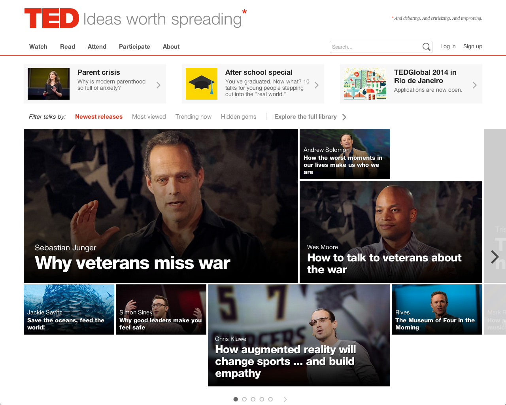
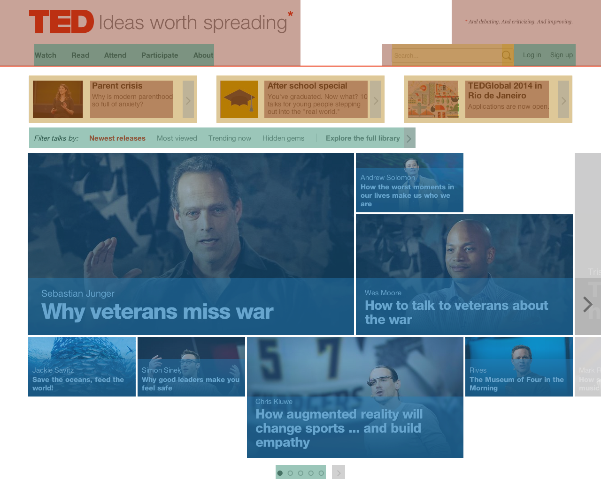
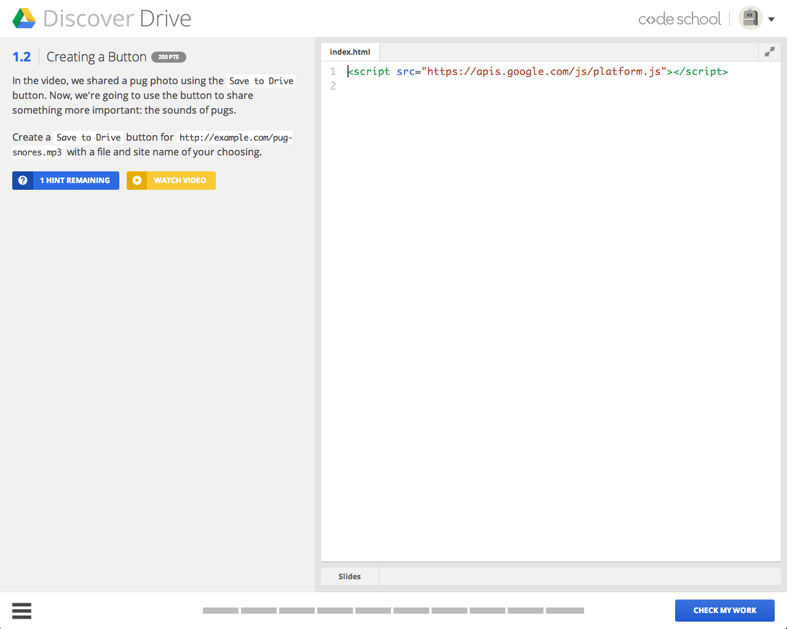
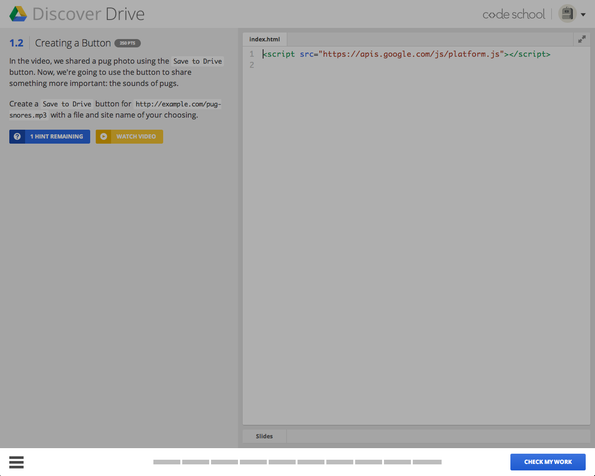
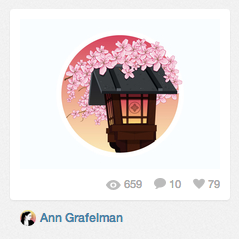

Define
Before we dig into the thinking behind modular CSS, it’s important to define it, and talk about the tenets of modular CSS.
Note: I will use the words module, pattern, and component interchangeably; they all refer to a set of self-contained styles.
From Pages to Components
We’ve made a shift from thinking of our styling in terms of pages to styling in terms of components (patterns, modules). Instead of looking at a page and defining it as its whole, we now need to look at all the various modules that make up the page.
“Focusing on creating healthy front-end modules instead of complete pages can help break complex page layouts into reusable solutions.” — Dave Rupert
 
This isn’t the Home page, but rather a collection of various style patterns and modules that we can use all over the site. Modular design is the principle that we use to get there.
“Modular CSS” Definition
So what exactly do we mean by “Modular CSS”? Let’s look at the definition:
Modular design is an approach that subdivides a system into smaller parts that can be independently created and then used in different systems to drive multiple functionalities. — Wikipedia
I heard three important pieces in that definition:
- Smaller parts
- Independently created
- Used in different systems
Your CSS should be:
- Broken down into smaller parts, smaller chunks of styles
- Independently created, so you’re modules can be properly encapsulated (which we’ll get more into in a bit)
- Have the ability to be ported from system to system with minor modifications, whether it’s another site, or simply various containers within the site.
Breaking your CSS down into smaller chunks will ultimately result in more maintainable code.
.thumb { border-radius: 50%; display: block; }
We have a thumb module, which applies a small set of extendable styles for handling thumbnails, such as circle avatars.
Single Responsibility Principle
Those concepts are present in the “Single Responsibility Principle,” which is something that I always try to adhere to.
The single responsibility principle states that every class should have a single responsibility, and that responsibility should be entirely encapsulated by the class. All its services should be narrowly aligned with that responsibility. — Wikipedia
Single Responsibility
Firstly, our CSS modules should only have one responsibility. It’s helpful, when creating your modules, to add a comment block at the top of the file that explains, in one sentence, what that module does; what is its responsibility.
// *************************************
//
// Cell
// -> Width-limiting blocks
//
// *************************************
This comment block is using Sass, but the same idea applies to vanilla CSS.
Now we know what our module is responsible for, so we can build it.
.cell { margin: 0 auto; max-width: 900px; }
Here we have the cell module that handles the container for content. It makes sure that a section is centered and has its max-width set appropriately. This module only handles width limiting, and it adheres to the Single Responsibility Principle.
Encapsulation

In our newest course interface at Code School, we have this bar at the bottom of the interface, which we call the omnibar.

In the omnibar, there is a button on the far right.


The markup for the button looks like this:
<div class="omnibar"> <!-- ... --> <a href="#" class="btn">Check My Work</a> </div>
We want this button to be positioned absolutely to the bottom right. So how could we go about this?
..btn { /* ... */ }
We could just target the .btn and position it. Obviously, though, we don’t want every button to be absolutely positioned. Okay, let’s scope it:
.omnibar .btn { /* ... */ }
We could just target the .btn within the .omnibar, but we’re breaking the idea of encapsulation by having our two modules know about, and talk to one another. Let’s change this:
<div class="omnibar"> <!-- ... --> <a href="#" class="omnibar-btn btn">Check My Work</a> </div>
We add a new submodule class to the button, and now we can target that class:
.omnibar-btn { /* ... */ }
Now, as we want, the .omnibar module only knows about itself, and it handles how its elements are positioned. The button adds the styling, but doesn’t need to know about how it’s being positioned within the omnibar.
Positioning and layout are constant struggles with modular CSS. You’ll have to abstract a lot of the layout styling to a more global component to keep your modules properly encapsulated.
Classes
Now let’s look at some more practical applications of “Modular CSS.”
This one seems to be more commonplace these days, but it’s still worth mentioning: It’s best to stick with only using classes, avoiding IDs altogether. IDs are too specific, and they’ll cause you unnecessary headaches. Classes, on the other hand, flatten the specificity of your elements to make sure your styles are applied properly without having to fuss with specificity issues.
<table class="table"> <!--- ... ---> </table>
This may seem redundant, but we want to call .table, not table.
Establish naming conventions
It doesn’t matter as much what your naming conventions are, just that you have them. Decide with your team (or yourself) what those should be, and make sure to stick with the system, but be open to evolving it over time.
Nick Walsh, a front-end developer at Envy Labs, had this great quote that we always reference when we talk about how we write our CSS, and how frequently we change it.
This is how it is now, until we change it. — Nick Walsh
It’s very true. We constantly evaluate and evolve the system as we work on new projects, but that’s what makes the system better: constant evaluation.
At Code School (and Envy Labs), we use MVCSS, which is a Sass-based CSS architecture that I created with Nick. To give you a sample of some naming conventions, I’ll talk about how we do things.
This is by no means preaching our method. This is merely an example that can help guide you to establishing your own naming conventions.
camelCase & Hyphens
.list.tabList.list-item.tabList-item
We use camelCase for multiple words, and we use a hyphen to separate a module from a submodule.
Note: For filenames, use the same naming convention: (e.g. _list.sass, _tabList.sass)
Modifiers
A modifier is an alternate set of styling on a module.
We use double-hyphens (--) to denote a modifier.
Say, for example, we have these two buttons. The button on the left is our base button, and the button on the right is an alternate styling of the base button. For example:
.btn { background: blue; color: white; display: inline-block; line-height: 2.5; padding: 0 1em; }
Our base button styles. And now, our modifier:
.btn--b { background: yellow; color: black; }
So now we have defined our button modifier, which is an alternate styling of the base .btn. Then, in our markup:
<a href="#" class="btn">Button</a> <a href="#" class="btn btn--b">Button B</a>
We call our .btn class for the base button, and add both the base .btn class and the .btn--b modifier class on the modified button.
States
States are generally used for hooks that are added conditionally via JavaScript; things like, is-active, is-hidden, is-editing, etc.
.dropdown { display: none; } .dropdown.is-active { display: block; }
So, for example, we have this .dropdown that is hidden by default, and is shown when the .is-active state class is added. Simple as that.
Context
This is a very important concept that applies to the Single Responsibility Principle’s “encapsulation” idea. Let’s say that we have a .dropdown module, and when that .dropdown is inside of a parent container, it needs to have position: relative on that parent container to set the positioning context. Rather than adding position: relative to that parent container, thus breaking the “Single Responsibility Principle,” because our modules are no longer encapsulated (they are directly affecting one another), we can use a “context” class to handle this for us:
.has-dropdown { position: relative; }
We define a context class using .has- as the prefix. Then, in our markup:
<div class="container has-dropdown"> <div class="dropdown"> <!-- ... --> </div> </div>
The .container doesn’t need to know what’s in it by altering its styles to accommodate the .dropdown. Instead, the .dropdown says, “Hey! I’m here, deal with it.”
That’s a brief look at the naming conventions and structure that our team uses, and hopefully it’s a useful example that you can work off of. We borrowed a lot of ideas from great methodologies created by insanely smart people. Things like:
- OOCSS
- BEM
- Suit
- SMACSS
- inuit.css
Make sure you look at all these methodologies, as one might fit your way of working the best. They are also great starting points to building your own system.
Limit nesting
This tenet applies specifically to CSS preprocessors, like Sass and LESS, that allow you to nest your selectors. This is important to talk about because of the popularity and widespread use of CSS preprocessors.
We use and love Sass, but there are other great options out there to pick from.
Although nesting is an attractive feature, and one touted by most “Beginner’s Guide to Sass” tutorials out there, it’s something you have to be very careful with.
When I used Sass for the first time on a project, I nested everything inside of section.content. It was an absolute nightmare.
section.content { .header { // ... } .main { // ... } .footer { // ... } }
Now, we don’t nest much, and when we do, it’s not many levels deep.
- Example of proper Sass
We generally only nest things like :hover, :focus, ::before, ::after, :last-child, etc.
.btn background: blue color: white display: inline-block line-height: 2.5 padding: 0 1em &:hover, &:focus background: green
Avoid “magic numbers”
What am I talking about when I say “magic numbers”?
.element { position: relative; top: -2px; }
You know what this is. We all do it. These “magic numbers” are best to avoid whenever possible. You want your styles to be predictable and flexible, and these “magic numbers” break that. However, when you do use them, which is sometimes unavoidable, make sure to document it.
.element { position: relative; top: -2px; /* FIXME: Magic number! */ }
Now I have a way to search across the project and find the magic numbers whenever I do a refactor.
Abstract layout and positioning
In addition to magic numbers, layout and positioning in CSS can cause you a lot of headaches when trying to keep your styles flexible. Let’s look at an example.
.nav { float: right; width: 50%; }
This is all well and good until we have a second .nav block that needs to be positioned to the left, or even centered. Ask yourself, why is this navigation block being positioned to the right at 50%? Is it because it’s in another module? Well, you’ll want to use a higher-up layout module to handle this (e.g. a grid).
<div class="grid"> <div class="grid-box grid-box--1of2"> <!--- ... ---> </div> <div class="grid-box grid-box--1of2"> <nav class="nav"> <!--- ... ---> </nav> </div> </div>
This is an example of the grid we use, but the concept of a grid handling the structure is what’s important here. The individual module doesn’t need to control its layout; it should flex and fit in any container.
Evolution of Modular CSS
We’ve seen a gradual shift in the way that we think about modular CSS, and how our styles should be written. Let’s look at an example.

Ah, the Dribbble shot. We’re all (most likely) very familiar with it. How would we have marked this up initially with the advent of “modular” CSS?
<div class="shot"> <div> <a href="#"> <img src="image.jpg" alt="" /> </a> <ul> <li>3</li> <li><a href="#">1</a></li> <li><a href="#">2</a></li> </ul> </div> <h2> <a href="#"> <img src="user.jpg" alt="User Name" /> User Name </a> </h2> </div>
.shot { } .shot div { } .shot img { } .shot ul { } .shot ul li { } .shot h2 { } /* ... */
This worked, but we quickly ran into issues when we changed the markup. What happens when that h2 turns into an h3? Well, not only do you have to change it in the HTML, but you also have to change it in the CSS. And specificity! We’re making it really difficult to overwrite down the cascade.
Ok ok, we’ll scope everything to the .shot!
<div class="shot"> <div class="shot-preview"> <a href="#"> <img class="shot-img" src="image.jpg" alt="" /> </a> <ul class="shot-list"> <li>3</li> <li><a href="#">1</a></li> <li><a href="#">2</a></li> </ul> </div> <h2 class="shot-user"> <a href="#"> <img src="user.jpg" alt="User Name" /> User Name </a> </h2> </div>
.shot { } .shot-preview { } .shot-img { } .shot-list { } .shot-title { } .shot-user { }
Alright. We’ve fixed the problem with that h2 changing to an h3. Now we just have to target the shot-user class, and it will apply the correct styles to any HTML element used there. Good? Not really. What if we use this same pattern for another element that isn’t a “shot”? The name shot doesn’t really make sense for that element, so we need to make it something more abstract. Alright, let’s evolve this.
<div class="card"> <div class="card-preview"> <a href="#"> <img class="card-img" src="image.jpg" alt="" /> </a> <ul class="card-list"> <li>3</li> <li><a href="#">1</a></li> <li><a href="#">2</a></li> </ul> </div> <h2 class="card-user"> <a href="#"> <img src="user.jpg" alt="User Name" /> User Name </a> </h2> </div>
.card { } .card-preview { } .card-img { } .card-list { } .card-title { } .card-user { }
Okay, we call it a card; that’s way more abstract, so we’re good, right? Well not quite. We realize now that our card-list styles are being duplicated on different lists throughout the site. We need to pull that out. I think you see where this is headed.
<div class="card"> <div class="card-preview"> <a href="#"> <img class="card-img" src="image.jpg" alt="" /> </a> <ul class="list"> <li>3</li> <li><a href="#">1</a></li> <li><a href="#">2</a></li> </ul> </div> <h2 class="card-user"> <a href="#"> <img src="user.jpg" alt="User Name" /> User Name </a> </h2> </div>
.card { } /* ... */ .list { }
The same thing starts happening for the various shot submodules, and now we see the problem. We can see that the shot isn’t really a shot, it’s a collection of various style patterns that should be written as highly reusable patterns.
<div class="card"> <a href="#"> <img class="thumb thumb--m" src="image.jpg" alt="" /> </a> <ul class="list"> <li class="list-item">3</li> <li class="list-item"><a href="#">1</a></li> <li class="list-item"><a href="#">2</a></li> </ul> </div> <div class="bucket bucket--flag"> <div class="bucket-media"> <img class="thumb" src="user.jpg" alt="User Name" /> </div> <div class="bucket-content"> <h2><a href="#">User Name</a></h2> </div> </div>
Now we can see how modular CSS has evolved through phases that have brought us to this point. We’re not looking at “things” that may seem to have a clear name and markup, but really a collection of independently created modules that you can mix and match to create multiple style patterns. But how do we find these patterns? We need to establish a process.